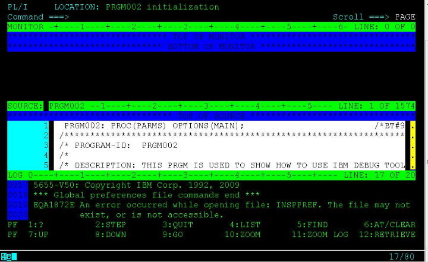

作为一个PL/I、COBOL程序猿，调试程序是必须的一项技能。这里我来说说大机上面的调试工具IBM的DebugTool，它支持的环境包括BATCH, TSO, CICS, DB2, DB2存储过程以及UNIX等等。
这篇我来说说如何设置让程序可以被Debug
首先，你必须在编译程序的时候需要选择以Debug模式编译，这个在changeman里面直接在编译的时候选个IBM Debug Tool="Y"就可以了。
接着，如果是BATCH的，就需要在JCL的PARM中指定TEST运行时的参数，通过VTAM接口来初始化debug模式，VTAM%后面跟着的是userid，就像这样：

是BATCH的话，你还要有一个Debug的session，这个可以参照我的另外一篇博文：<<登陆大型机——Aviva的介绍>>，只需注意在建debug session的时候destination的IP一般和普通大机的物理ip是不一样。填上正确的ip,然后用你的id登陆,这里我的id是IBMUSER，须跟上面设置的一样。
回到JCL这边，submit，那恭喜你，你就可以看到Debugtool的画面了:

但是，如果程序是ONLINE的话，一般我们用CICS上面的DTCN这个工具来debug的。这里我假设你已经在上面“首先”里面正确编译了一个ONLINE的程序PRGM002 (带debug编译选项的)。然后，你登陆CICS，输入DTCN进入DTCN的设置界面:
参照上面，假如一个transaction叫BTAX ，调用了你要debug的程序PRGM002，你就按照上图那样正确设置好，然后F4保存，F5激活设置，F3退出回到CICS界面，输入BTAX，那也恭喜你，你就进入了debugtool的画面了。